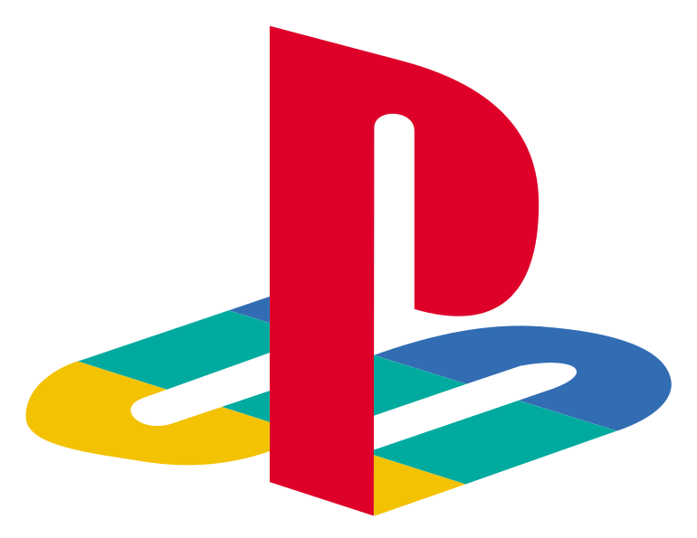

cr1mnsx
-
cr1mnsx best player улиц«Don't you dare go Hollow...»
 PS5
ПОСЛЕДНИЙ ЗАПУСК НА PLAYSTATION 5 · 8 ОКТЯБРЯ 2026DARK SOULS™ II: Scholar of the First Sin
PS5
ПОСЛЕДНИЙ ЗАПУСК НА PLAYSTATION 5 · 8 ОКТЯБРЯ 2026DARK SOULS™ II: Scholar of the First Sin 14/38 трофеев (27%) · C Rank
О ИГРОКЕПОСЛЕДНИЙ ЗАПУСК PlayStation 5ПЛАТФОРМА PS5 & PCЖАНР Soulslike & ActionСТАТИСТИКА PSN LVL 186АКТИВНАЯ ИГРА 14/38 (27%)
14/38 трофеев (27%) · C Rank
О ИГРОКЕПОСЛЕДНИЙ ЗАПУСК PlayStation 5ПЛАТФОРМА PS5 & PCЖАНР Soulslike & ActionСТАТИСТИКА PSN LVL 186АКТИВНАЯ ИГРА 14/38 (27%) 0
0
0
0
 5
5
 9
ВСЕГО ТРОФЕЕВ PSN 647 трофеев (2 платины)ФАВОРИТ Dark Souls SeriesЯНДЕКС МУЗЫКА · ПЛЕЙЛИСТ
9
ВСЕГО ТРОФЕЕВ PSN 647 трофеев (2 платины)ФАВОРИТ Dark Souls SeriesЯНДЕКС МУЗЫКА · ПЛЕЙЛИСТ Плейлист Cr1mnsx Яндекс Музыка · Любимые треки((•)) ТРАНСЛЯЦИЯ & ПРОФИЛИ
Плейлист Cr1mnsx Яндекс Музыка · Любимые треки((•)) ТРАНСЛЯЦИЯ & ПРОФИЛИ
Музыка
-
Яндекс Музыка · Плейлист Cr1mnsx
Любимый плейлист · Слушать онлайн в плеере
Плейлист Cr1mnsx Яндекс Музыка · Официальный плеерONLINE STREAM
-
Открыть плейлист в Яндекс Музыке
music.yandex.ru · Прослушивание на телефоне или в приложении ↗
-
Моя волна · Яндекс Музыка
Умный бесконечный поток музыки по вкусам на music.yandex.ru ↗
PlayStation 5
-
 PlayStation Network · Профиль Cr1mnsx
🎮 Последний запуск: DARK SOULS™ II: Scholar of the First Sin (8 октября 2026) · 647 трофеев
PlayStation Network · Профиль Cr1mnsx
🎮 Последний запуск: DARK SOULS™ II: Scholar of the First Sin (8 октября 2026) · 647 трофеев

Игровой профиль на PlayStation 5. 647 трофеев, 2 платины (Spider-Man Remastered & Miles Morales), недавняя активность и трофейный прогресс.
PS5
↗Последний запуск на PlayStation 5 · 8 октября 2026DARK SOULS™ II: Scholar of the First Sin 14/38 трофеев (27%) · C Rank
Открыть профиль на PSN.GG ↗ 2 платины 20 золотых 128 серебра 497 бронзы⭐ 186 LVL -
DARK SOULS™ II: Scholar of the First Sin
🎮 Последний запуск на PS5 · 8 октября 2026 · 27% трофеев
Легендарное приключение в Дранглике. Запущено на консоли PlayStation 5. Прогресс трофеев: 27% (14/38). Rank C.
27% трофеев (14/38)⭐ C Rank⏱️ 8 окт. 2026 -
 Minecraft
Бесконечные миры, строительство и выживание на PS5
Minecraft
Бесконечные миры, строительство и выживание на PS5
-
 Grand Theft Auto V (PlayStation®5)
Лос-Сантос нового поколения · 17% трофеев · 12/78
Grand Theft Auto V (PlayStation®5)
Лос-Сантос нового поколения · 17% трофеев · 12/78
Криминальный эпос Rockstar Games в 4K 60FPS с трассировкой лучей и DualSense поддержкой. Прогресс: 17% (12/78 трофеев).
Трофеи на PSNProfiles ↗ 17% трофеев (12/78)⭐ D Rank⏱️ 7 окт. 2026 -
 Marvel's Spider-Man 2
Питер Паркер и Майлз Моралес против Венома и Крэйвена
Marvel's Spider-Man 2
Питер Паркер и Майлз Моралес против Венома и Крэйвена
-
 The Witcher 3: Wild Hunt — Remastered
Next-Gen PS5 сага о Геральте · 18% трофеев · 17/79
The Witcher 3: Wild Hunt — Remastered
Next-Gen PS5 сага о Геральте · 18% трофеев · 17/79
Улучшенная версия для PlayStation 5. Белый Сад, Велен, Новиград и острова Скеллиге. Прогресс: 18% трофеев (17/79).
Трофеи на PSNProfiles ↗ 18% трофеев (17/79)🐺 Белый Волк⏱️ 4 окт. 2026 -
 Assassin's Creed® Unity
Париж 1789 · Сюжет пройден · 40% трофеев · 27/58
Assassin's Creed® Unity
Париж 1789 · Сюжет пройден · 40% трофеев · 27/58
Система паркура в Париже эпохи Революции. Основной сюжет успешно пройден. Прогресс трофеев: 40% (27/58).
Трофеи на PSNProfiles ↗ 40% трофеев (27/58)⚔️ Сюжет пройден⏱️ 4 окт. 2026 -
 Far Cry® 3 Classic Edition
Рук Айленд · Сюжет пройден · 45% трофеев · 24/44
Far Cry® 3 Classic Edition
Рук Айленд · Сюжет пройден · 45% трофеев · 24/44
«Я уже говорил тебе, что такое безумие?» Культовое приключение Джейсона Броди на тропических островах Рук. Прогресс: 45% (24/44).
Трофеи на PSNProfiles ↗ 45% трофеев (24/44)🏝️ Рук Айленд⏱️ 4 окт. 2026 -
 skate.™
Новый скейтбординг San Vansterdam на PlayStation 5
skate.™
Новый скейтбординг San Vansterdam на PlayStation 5
-
 UNCHARTED: Legacy of Thieves Collection
Приключения Нейтана Дрейка и Хлои Фрейзер на PS5
UNCHARTED: Legacy of Thieves Collection
Приключения Нейтана Дрейка и Хлои Фрейзер на PS5
-
 Until Dawn™
Интерактивный хоррор на UE5 · 4% трофеев · 3/29
Until Dawn™
Интерактивный хоррор на UE5 · 4% трофеев · 3/29
Ремейк на Unreal Engine 5 с эффектом бабочки и выживанием до рассвета на заснеженной горе Блэквуд.
Трофеи на PSNProfiles ↗ 4% трофеев (3/29)🌲 Гора Блэквуд⏱️ 21 сент. 2026 -
 Dark Souls Remastered (Top-1 Souls)
Лордран, костры и путешествие сквозь пепел и тьму · 42%
Dark Souls Remastered (Top-1 Souls)
Лордран, костры и путешествие сквозь пепел и тьму · 42%
Величайшая классика Хидэтаки Миядзаки. Непревзойденный левел-дизайн Лордрана, костер Храма Огня, Анор Лондо и битва с Гвином.
Трофеи на PSNProfiles ↗ 42% трофеев (17/41)⚔️ Сюжет пройден🔥 Храм Огня -
 Red Dead Redemption 2
Эпос Rockstar Games о закате эпохи Дикого Запада · 15%
Red Dead Redemption 2
Эпос Rockstar Games о закате эпохи Дикого Запада · 15%
Грандиозный открытый мир фронтира, глубокая драматическая история Артура Моргана и банды Ван дер Линде на закате беззакония.
Трофеи на PSNProfiles ↗ 15% трофеев (11/52)⚔️ Сюжет пройден🐎 Артур Морган -
 Dying Light
Адреналиновый паркур и выживание среди орд зомби в Харране
Dying Light
Адреналиновый паркур и выживание среди орд зомби в Харране
Паркур от первого лица в зараженном Харране, крафт смертоносного снаряжения и опаснейшие ночные вылазки от свирепых Прыгунов.
Трофеи на PSNProfiles ↗ 3% трофеев (3/69)🏃 Харранский трейсер🌙 Ночная охота -
 Helldivers 2
Тактический кооперативный шутер нового поколения во имя Супер-Земли
Helldivers 2
Тактический кооперативный шутер нового поколения во имя Супер-Земли
Ураганный экшен, стратагемы, орбитальные бомбардировки и ожесточенные битвы против бесконечных орд терминидов и автоматонов.
Трофеи на PSNProfiles ↗ 7% трофеев (5/39)🚀 Адский десантник🛡️ Супер-Земля -
 Brawl Stars · Профиль Cr1mnsx
🏆 40,000+ кубков · 108 бойцов · Ежедневный актив · #2RGUQJQ0R
Brawl Stars · Профиль Cr1mnsx
🏆 40,000+ кубков · 108 бойцов · Ежедневный актив · #2RGUQJQ0R
Активный игрок с 2019 года. Ежедневный гринд кубков и рангов. Статистика аккаунта синхронизируется с Brawlify и Brawl Time Ninja.
Кубки: 39,950🔥 Рекорд: 40,120🔓 Бойцы: 108 / 108 3v3 победы: 2,840 Соло / Дуо: 1,530🛡️ Клуб: 0.3.7|teams


PS1 Ретро
-

Tekken 3 (Sony PS1) Культовый 3D-файтинг · Джин Кадзама, Хваран, Эдди Гордо · 60 FPS - Crash Bandicoot 3: Warped Naughty Dog · Платформер с путешествиями во времени · Топ-1 PS1
- Crash Team Racing (CTR) Naughty Dog · Легендарные аркадные гонки с дрифтом и оружием
- Crash Bandicoot 2: Cortex Strikes Back Золотая классика Naughty Dog · 25 уровней, ранец и Поляр
- Crash Bandicoot (Оригинал 1996) Первое культовое приключение сумчатого бандикута на Wumpa Island
- Mortal Kombat Trilogy Midway · Все бойцы и арены классической трилогии · Fatality & Brutality
- Silent Hill Konami / Team Silent · Культовый психологический хоррор 1999 года
- Resident Evil 3: Nemesis (на русском) Capcom · Побег Джилл Валентайн из Раккун-Сити · Русская версия
- Resident Evil: Director's Cut Capcom · Особняк Спенсера · DualShock версия survival horror
- Metal Gear Solid (Диск 1) Хидэо Кодзима / Konami · Кинематографичный тактический стелс-экшен
- Gran Turismo 2 (Arcade Mode) Polyphony Digital · Главный автосимулятор PlayStation 1 · Сотни авто
- Castlevania: Symphony of the Night Konami · Шедевр Алукарда в замке Дракулы · Родоначальник метроидваний
- Tony Hawk's Pro Skater 2 Neversoft / Activision · Скейтборд-культ 2000 года с топовым саундтреком
- Spyro the Dragon Insomniac Games · Полёт, пламя и сбор кристаллов в мире драконов
- Twisted Metal 2: World Tour SingleTrac / Sony · Смертельные автобои по всему миру · Sweet Tooth
- Grand Theft Auto 2 Rockstar Games · Война банд в ретро-футуристичном городе Зайбацу
- PlayStation 1 (PSX) · Запуск своего диска / ROM Запуск любых своих образов .ISO, .BIN, .CHD, .PBP · DualSense & геймпады
Twitch
-
 cr1mnsx на Twitch
twitch.tv/cr1mnsx · Мой профиль на твиче
cr1mnsx на Twitch
twitch.tv/cr1mnsx · Мой профиль на твиче
-
 mafanyaking (Влад Мафаня)
twitch.tv/mafanyaking · Любимый стример
ОФФЛАЙНСтрим Влада Мафани на Twitch
mafanyaking (Влад Мафаня)
twitch.tv/mafanyaking · Любимый стример
ОФФЛАЙНСтрим Влада Мафани на Twitch -
 ТГК Мафани (Toxic Legion)
t.me/toxiclegion · Официальный телеграм-канал Мафани
ТГК Мафани (Toxic Legion)
t.me/toxiclegion · Официальный телеграм-канал Мафани
-
 Сайт Мафани (Архив Пранков)
mafanya.ru · Все легендарные пранки и проекты
Сайт Мафани (Архив Пранков)
mafanya.ru · Все легендарные пранки и проекты
-
Влад Клёвые Тачки (Диор Армани)
t.me/VLADAPRMANI · Телеграм Влада, легендарного персонажа лора
-
 Новости по Мафане (Бомбастер)
t.me/bombastertg · Нарезки, анонсы и свежие новости
Новости по Мафане (Бомбастер)
t.me/bombastertg · Нарезки, анонсы и свежие новости
Линки
 Яндекс Музыкаmusic.yandex.ru · Мой плейлист & любимые треки
Яндекс Музыкаmusic.yandex.ru · Мой плейлист & любимые треки ВКонтактеvk.ru/cr1mnsx
ВКонтактеvk.ru/cr1mnsx Steam Профильcr1mnsx
Steam Профильcr1mnsx Twitch Профильtwitch.tv/cr1mnsx
Twitch Профильtwitch.tv/cr1mnsx- Канал Мафани на Twitchtwitch.tv/mafanyaking
- ТГК Мафани (Toxic Legion)t.me/toxiclegion
- Сайт Мафани (Архив Пранков)mafanya.ru
- ТГ Влада Клёвые Тачкиt.me/VLADAPRMANI (@VLADAPRMANI)
- Новости по Мафане (Бомбастер)t.me/bombastertg
 PlayStation NetworkPSN: cr1mnsx · PlayStation 5
PlayStation NetworkPSN: cr1mnsx · PlayStation 5- Telegramt.me/cr1mnsx
Об этом сайте
-
 Статистика сайта и посетители
Живой счётчик входов
Мониторинг посетителей сайтаREALTIMEУникальных гостей 295Всего входов на сайт 346Вошли сегодня 14Сейчас в сети 1 в сети
Статистика сайта и посетители
Живой счётчик входов
Мониторинг посетителей сайтаREALTIMEУникальных гостей 295Всего входов на сайт 346Вошли сегодня 14Сейчас в сети 1 в сети -
 Сайт cr1mnsx · Frutiger Aero x PS5/PS3 XMBПортфолио в дизайне PlayStation 3 XrossMediaBar
Сайт cr1mnsx · Frutiger Aero x PS5/PS3 XMBПортфолио в дизайне PlayStation 3 XrossMediaBar
- Видео-аватарMax Verstappen (Red Bull Racing)
 Живой аквариум на фонеSkeuomorphic live video background
Живой аквариум на фонеSkeuomorphic live video background- Звуки меню PS3Синтезированы через Web Audio API
- Шрифт M PLUS 1pM+ Fonts Project · SIL OFL